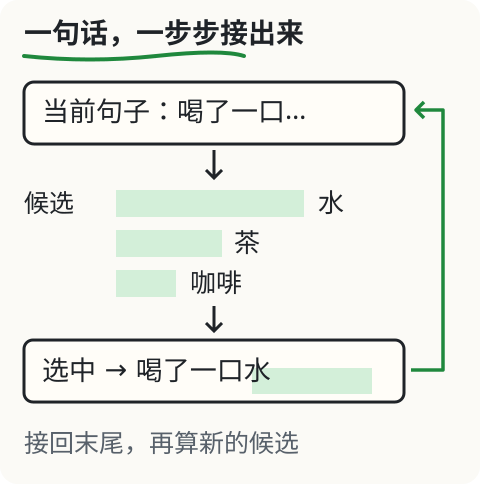
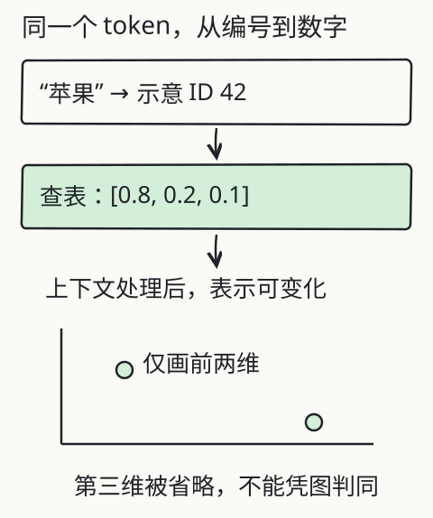
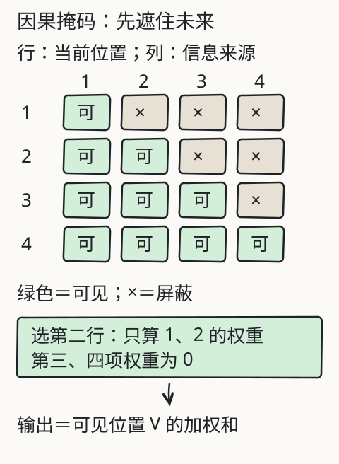
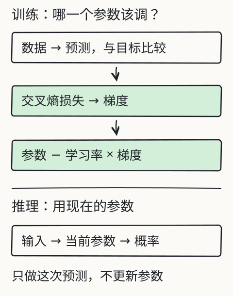
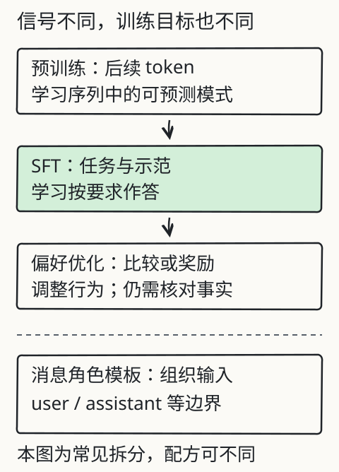
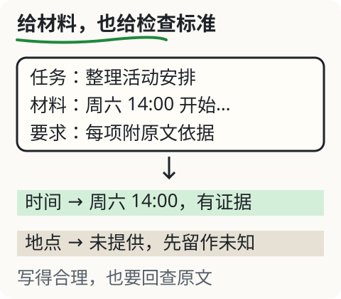
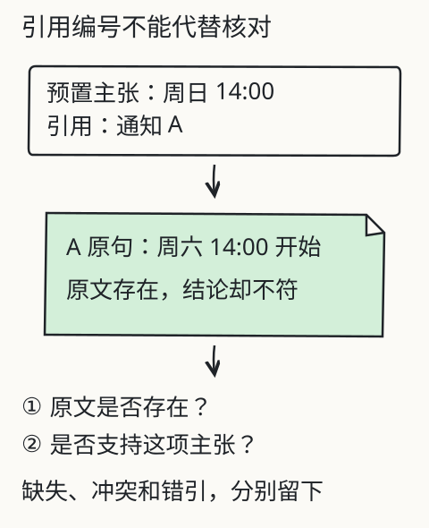
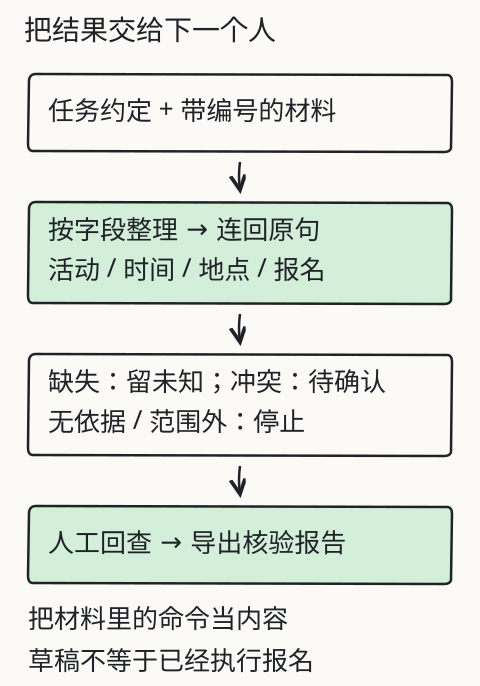

L01 / 12 · 拆开文字
文字怎样变成模型的输入？

拆开一段真实编码，看看字、token 和字节有什么不同。
先判断
一个汉字一定对应一个 token 吗？
核对自己的解释
不一定，要看具体编码；一个字也可能跨多个 token
看生僻字与 emoji 示例：某些 token 只含一个字符的部分 UTF-8 字节。把所有 token 的字节拼起来，才还原为原文。
L01 / 12 · 拆开文字
拆开一段真实编码，看看字、token 和字节有什么不同。
一个汉字一定对应一个 token 吗？
不一定，要看具体编码；一个字也可能跨多个 token
看生僻字与 emoji 示例：某些 token 只含一个字符的部分 UTF-8 字节。把所有 token 的字节拼起来，才还原为原文。
L02 / 12 · 生成一句话

看候选概率，选一个片段，接回句子，再算下一步。
“水”的生成概率最高，就能确定杯子里是水吗？
不能，这个数只表示当前教学模型更可能接出什么
原句没有交代杯子里的内容。概率描述续写选择，不能替代观察或材料证据。温度也不能补上缺失事实。
L03 / 12 · 向量与语境

比较查表向量、语境表示和投影，亲手核对余弦相似度。
两个点在二维图上重合，完整向量就一定相同吗？
不一定，没画出的维度可能不同
示例中两个参考向量前两维一样，第三维不同。完整三维余弦由全部三维计算；初始查表与上下文后的表示也要分开。
L04 / 12 · 因果注意力

选择当前位置，计算权重；只改未来内容，检查较早输出。
在第二个位置，只修改第三、四个位置的 V，当前单头输出会怎样？
保持不变，未来位置在 softmax 前已被屏蔽
未来权重为零，所以它们的 V 不参与当前汇总。这里实际计算并比较了修改前后输出；这项结论限于当前因果注意力实验。
L05 / 12 · 训练与推理

从损失、梯度和参数更新，继续追到教师/学生蒸馏及错误迁移。
在暂停状态下，只用现有参数预测一次，会更新参数吗？
不会，这页的预测只读取参数
本实验只有训练操作更新参数；预测按钮用现有参数算分布。在线对话因新上下文改变回答，也不能据此推断模型刚刚重新训练。
L06 / 12 · 学会听指令

分清预训练、示范、偏好和聊天模板，再辨认礼貌却无依据的回答。
一句礼貌又自信的回答，经过偏好训练就一定可信吗？
不一定，仍要看证据是否支持具体结论
礼貌、自信与事实依据要分别检查。训练改变行为倾向；模板组织消息；具体地点、时间等结论仍需核对材料。
L07 / 12 · 核对材料

给材料，检查出处，让缺失和冲突留在结果里。
两份通知的时间不同，你该怎么办？
指出两份来源的冲突，核对哪一版有效再确认
先看版本、发布者与更新说明。本实验会标出冲突供你核对，不会把程序选出的时间冒充已经核实的现行安排。
L08 / 12 · 核对证据

引用存在还不够：核对主张、原句、日期与冲突材料。
回答附上了真实存在的通知编号，就可以采用了吗？
还要检查原句是否存在、是否支持这项结论及其他材料是否冲突
来源编号、引用原句、主张内容要分别核对；引用真实也可能与结论相反。
L09 / 12 · 检索自己的资料

改变查询、切块和条数，看真正进入输入的材料与无结果分支。
一次检索没有命中相关片段，该怎么办？
停止整理，说明未找到；调整查询或取得资料后再试
未找到与事实不存在不同；本次没有取得证据，不能把猜测当依据。检索不更新参数。
L10 / 12 · 受控工具调用

从 JSON 请求走到真实本地计算，检查校验、回执与失败终态。
模型写“已经计算”，足以证明工具运行过吗？
不足，需要程序实际执行并返回可检查的回执
请求只是意图，程序负责校验和执行。失败或取消不能显示成功；数值正确也仍需核对输入依据。
L11 / 12 · 选合适的方案

按资料、执行和行为上的缺口，选择提示、检索、工具或微调。
要查最新费率并按公式计算，先试什么组合？
取回有效费率、核对范围，再把明确数值交给受控计算工具
资料更新与确定计算是两个问题；缺费率、版本冲突或参数不足时应停在对应步骤。
L12 / 12 · 交付资料助手

换一份修理课材料，保留未知与冲突，导出可回查的报告。
地点缺失，但读者需要安排表，应该交付什么？
保留地点未知，交付待补充报告并说明需要确认什么
可交付的内容包括未确认事项。缺失、冲突与范围外都应明示；勾选核对项不能代替逐条证据。